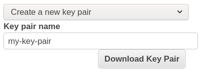
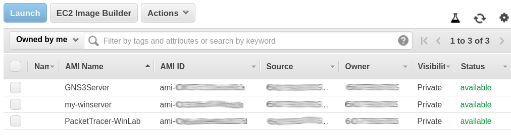

Posted on September 2, 2020 - 2 minute read
How to setup Cisco Packet Tracer on a remote server
This is the companion article to How to setup GNS3 on a remote server and its video.- Launch an EC2 instance
- Install Cisco Packet Tracer on the instance
- Enjoy!
- But before you go... save your work!
Step Zero : Requirements
- An AWS account
- A Cisco Network Academy account
- A RDP client of your choice
Step 1 : Launch an EC2 instance
- Launch a Windows instance
- Navigate to EC2 in the AWS Console.
- Click Launch Instance.
- Select a free-tier elegible Windows image.
- Click Next - leave the Instance Type panel as is.
- Click Next - leave the Instance Details panel as is.
- Click Next - leave the Storage panel as is.
- Click Add Tag. Set key to Name and value to the name you choose to your instance. (Optional step)
- Click Next.

- Create a Security Group
- Assign a security group: Create a new security group
- Set the security group name and description as you choose.
- Type: RDP
- Protocol: TCP
- Port Range: 3389
- Source: My IP
- Description: (optional)
- Click Review and Launch.
- Click Launch.
- Create a Key Pair
- Select: Create a new key pair
- Set the key pair name as you choose.
- Click Download Key Pair
- Click Launch Instances
- 
- Connect to instance
- Back to EC2 Instances panel in the AWS Console.
- Select the instance.
- Click Connect.
- Connection method: A standalone RDP client
- At the RDP client of your choice, input the details provided.
- Target: Public DNS
- User name Administrator
- Password: Click Get Password
- Key Pair Path: Click Browse to select the keypair downloaded on the previous step.
- Click Decrypt Password
- Connect.
Step 2 : Install Cisco Packet Tracer on the instance
- Download/Install Cisco Packet Tracer
- Inside the server, open a browser and login to: netacad.com
- Click Resources
- Click Download Packet Tracer
- Download the Windows 64 Bit version.
- Run the file downloaded.
- Accept the agreement. Click Next; Next; Next; Next; Install; Finish
Step 3 : Enjoy!
Now you have the Cisco Packet Tracer installed and ready to go!
Step 4 : But before you go... save your work!(and some money)
Don't leave your instance running without any purpose. Save your instance (all configured and tweaked) to use it whenever you're up to lab again.
- Save your files
- Install the AWS CLI as instructed on the User Guide
- Create a S3 bucket:
aws s3 mb s3://mybucket/
- Upload the files to the bucket:
aws s3 cp local-file s3://mybucket/
- You can also pull files from the bucket:
aws s3 cp s3://mybucket/remote-file /local-folder/
- Create an AMI
- Back to EC2 Instances panel in the AWS Console.
- Select the instance.
- Click Actions; Image; Create Image
- Your AMIs will be available on the EC2 Images panel in the AWS Console.
- 
- Don't forget to terminate your instance!
- Back to EC2 Instances panel in the AWS Console.
- Select the instance.
- Click Actions; Instance State; Terminate
- Click Yes, Terminate